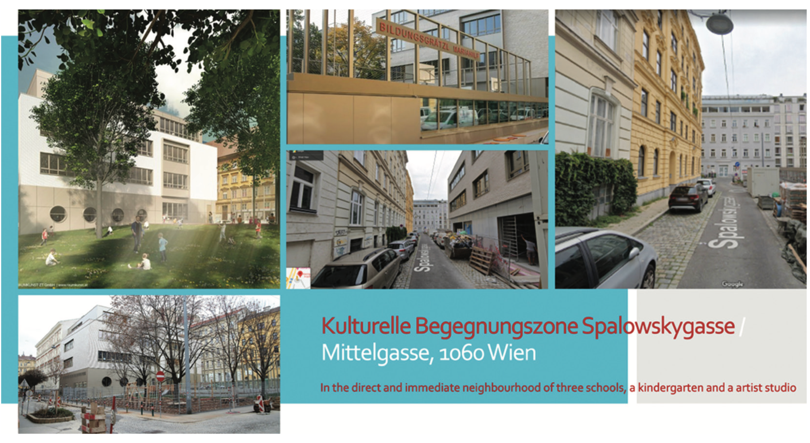
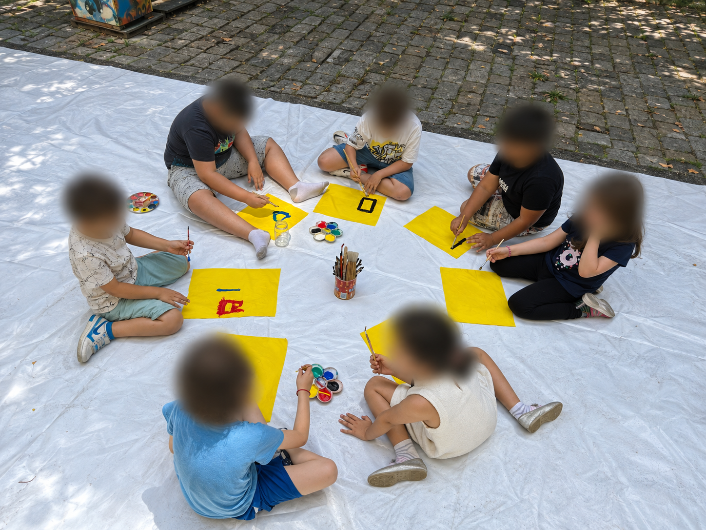

Projekte
SPA_LOW_SKY

Wie lässt sich das unmittelbare Schulumfeld durch Kunst gemeinsam gestalten? Mit dieser Frage beschäftigt sich SPA_LOW_SKY in Wien-Mariahilf. Die von Rolf Laven initiierte künstlerische Begegnungszone verbindet das Bildungsgrätzl rund um die Mittelgasse und Spalowskygasse mit seinem nachbarschaftlichen Umfeld. Schulen, Kunstschaffende, Studierende und Anwohnende gestalten hier gemeinsam einen öffentlichen Lern- und Begegnungsraum.
Im Laufe des Projekts entstanden Werkboxen, Sitzmöbel und Hochbeete. Workshops widmeten sich unter anderem dem Modellieren mit Lehm, dem Papierschöpfen, dem Textildruck und dem gemeinsamen Zeichnen. Vorhandene und wiederverwendete Materialien wurden zum Ausgangspunkt künstlerischer Auseinandersetzungen. Die Arbeiten verändern den gemeinsam genutzten Raum und geben Anlass, über seine Gestaltung ins Gespräch zu kommen.
2024 beteiligte sich Kunstviertel 6 mit dem Schulprojekt „SPALOWSKY: Künstlerische Forschung Mobiles, Urban Gardening Workshop, Gestaltung der Spalowskygasse“. Die Zusammenarbeit mit der Sonderschule an der Mittelgasse 24 verband künstlerische Forschung mit Fragen der Begrünung und Gestaltung des Schulumfelds. Das Vorhaben war in die OeAD-Schiene Kultur:Bildung eingebunden. Kunstpädagog*innen, Lehrer*innen, Schüler*innen, Künstler*innen und der Bezirk waren beteiligt.
Service-Learning bildet einen pädagogischen Bezugspunkt der übergreifenden Initiative: Lernen durch Engagement verbindet die künstlerische Arbeit mit einem Beitrag zum lokalen Zusammenleben. Die Beteiligten können eigene Ideen einbringen, gestalterische Entscheidungen erproben und Verantwortung für ihr Umfeld übernehmen. Der öffentliche Raum wird dabei zum Ort gemeinsamer Erfahrung und Auseinandersetzung.
SPA_LOW_SKY steht damit für eine Arbeitsweise, die Kunstviertel 6 weiterverfolgen möchte: künstlerische und pädagogische Praxis im Bezirk zusammenzubringen und mit den Beteiligten Möglichkeiten der Mitgestaltung zu entwickeln.
BODY. NOBODY. EVERYBODY.

Für April 2027 plant Kunstviertel 6 gemeinsam mit dem INTERMESH Collective aus Köln die Ausstellung BODY. NOBODY. EVERYBODY. in Wien-Mariahilf. Im Mittelpunkt steht die Frage, wie Menschen ihren Körper im Verhältnis zu anderen und zu ihrem städtischen Umfeld erleben. Nähe, Verletzlichkeit, Bewegung und Zugehörigkeit bilden Ausgangspunkte der künstlerischen Auseinandersetzung.
Mariahilf wird dabei zum Gegenstand gemeinsamer Erkundungen. Welche Orte vermitteln Sicherheit oder Vertrautheit? Wo werden Grenzen und Ausschlüsse spürbar? Welche Wege verbinden unterschiedliche Lebenswelten? Die Erfahrungen von Menschen, die hier wohnen, lernen oder arbeiten, sollen in die Ausstellung einfließen. Kunstschaffende aus Köln und Wien entwickeln ihre Beiträge im Austausch mit diesen lokalen Perspektiven.
Ein geplanter Schwerpunkt ist die Zusammenarbeit mit einer Schule im Bezirk. In künstlerischen Workshops sollen Jugendliche eigene Körper- und Stadtraumerfahrungen untersuchen und dafür zeichnerische, sprachliche oder räumliche Ausdrucksformen entwickeln. Sie wirken an der Auswahl und Präsentation ihrer Beiträge mit. Die Verbindung von schulischem Lernen und öffentlicher Ausstellung ermöglicht es, ihre Wahrnehmungen über den Unterricht hinaus zur Diskussion zu stellen.
Auch die Nachbarschaft und das Ausstellungspublikum sind eingeladen, Erinnerungen, alltägliche Wege und persönliche Raumerfahrungen beizutragen. Mapping – verstanden als subjektives künstlerisches Kartieren – verbindet die schulischen und öffentlichen Beteiligungsformen. Aus einzelnen Beobachtungen soll eine wachsende, vielstimmige Karte Mariahilfs entstehen. Unterschiedliche und auch widersprüchliche Erfahrungen können darin nebeneinanderstehen.
Das INTERMESH Collective bringt Erfahrungen mit Mapping und gemeinschaftlichen Ausstellungsprozessen ein. Kunstviertel 6 verbindet diese Zusammenarbeit mit seiner lokalen kunstpädagogischen Arbeit und den Begegnungsformen im Umfeld von SPA_LOW_SKY. Geplant ist eine kostenfrei zugängliche Ausstellung, die künstlerische Arbeiten, gemeinsames Gestalten und Gespräche zusammenführt.
Weitere Informationen zu Ort, Terminen und Beteiligungsmöglichkeiten folgen.